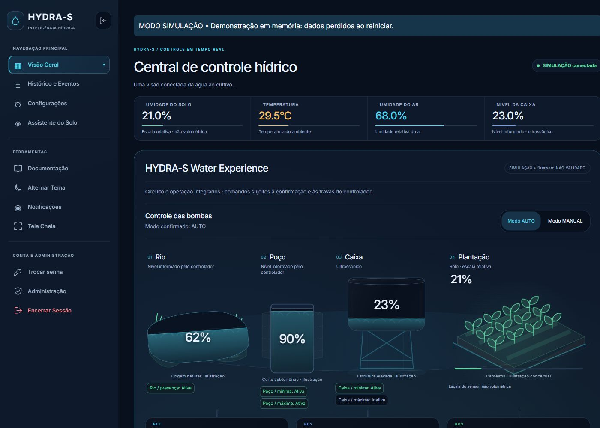
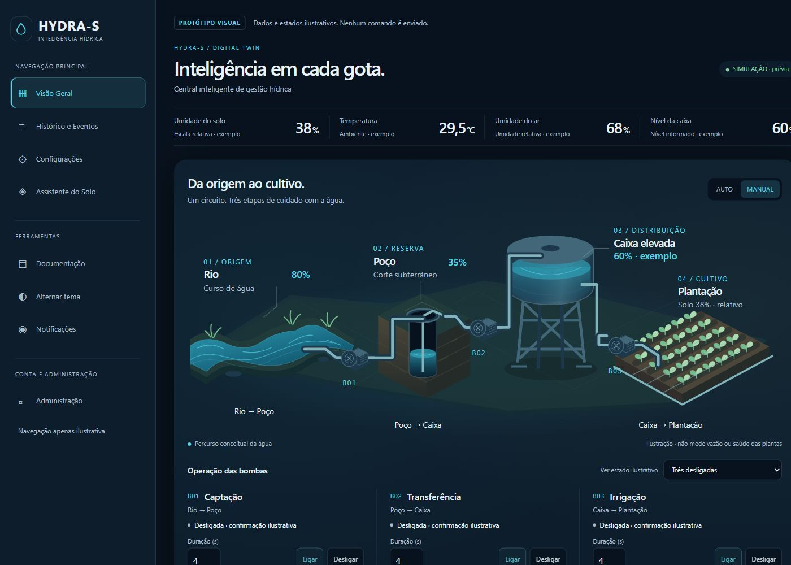
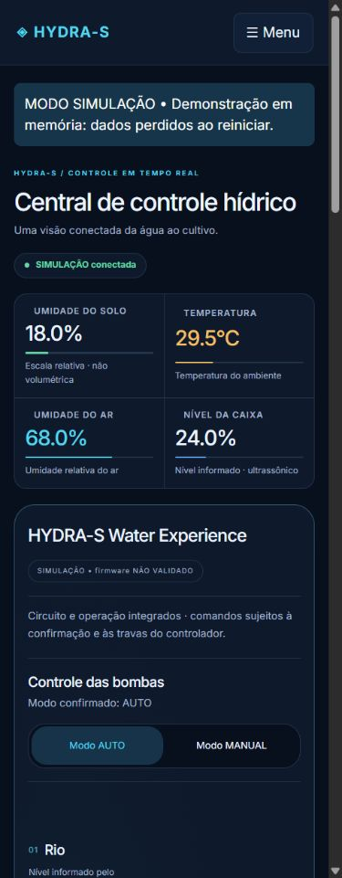
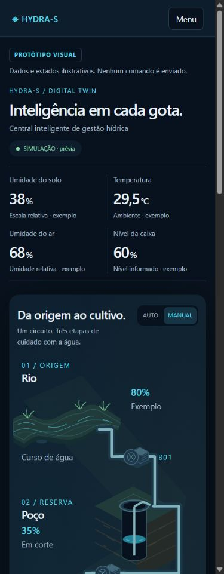
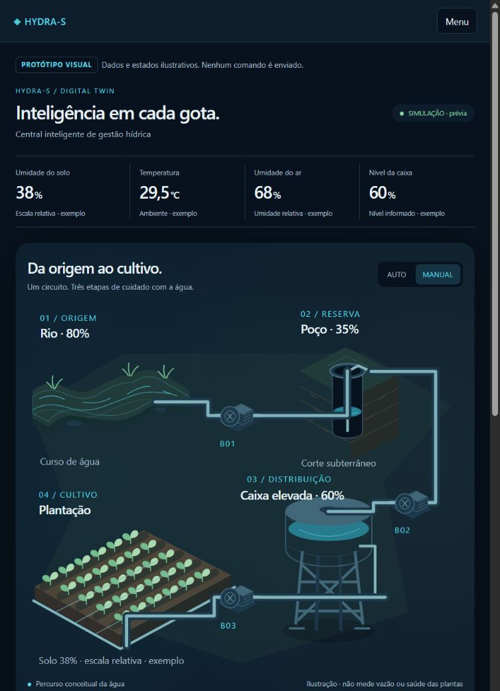

HYDRA-S / ESTUDO DE DESIGN
Capturas reais de navegador, no mesmo tema e nas mesmas dimensões. A proposta é independente e usa valores ilustrativos. A aplicação operacional não foi alterada.
Abrir o protótipo interativo local →

Recorte idêntico de 1400 × 1000 px em ambas as capturas, sem redimensionamento. A paisagem substitui a coleção de reservatórios isolados; a faixa de telemetria é mais baixa e os controles ficam na mesma superfície, sem um segundo conjunto de operação.


As duas capturas começam no topo e têm 375 × 961 px de área capturada; o navegador exclui sua moldura e a barra de rolagem. O restante do percurso e os controles ficam abaixo da primeira tela; os registros completos permitem comparar a rolagem sem esconder conteúdo.

Composição específica em duas faixas; os rótulos não são miniaturizados junto da cena desktop.